PROJET E5 · BTS SIO SISR
Serveur Web LAMP
& pfSense en DMZ
Intranet sécurisé · DMZ · Portail captif · DNS local
Présentation du projet
Contexte
Dans le cadre du BTS SIO option SISR, ce projet consiste à déployer un serveur intranet LAMP sous Debian 12, isolé dans une DMZ derrière un pare-feu pfSense. L'accès des utilisateurs est contrôlé par un portail captif, la résolution de noms assurée par un DNS local, et la base de données sauvegardée automatiquement.
Problématique
Comment déployer et sécuriser un serveur intranet LAMP en l'isolant dans une DMZ via pfSense, tout en contrôlant les accès des utilisateurs par un portail captif et en garantissant la disponibilité et la sauvegarde des données ?
Stack technique déployée
| Composant | Version | Rôle | Ports |
|---|---|---|---|
| Apache | 2.4.67 | Serveur HTTP/HTTPS de l'intranet | 80, 443 |
| MariaDB | 10.11.14 | Serveur de base de données | 3306 |
| PHP | 8.2.31 | Langage serveur du portail | — |
| phpMyAdmin | 5.2.1 | Administration de la base | 80 / 443 |
| pfSense CE | 2.7 | Pare-feu · Routeur · DNS · DHCP · Portail captif | 22, 53, 80, 443 |
Objectifs techniques
- Installer pfSense CE 2.7 et configurer 3 interfaces réseau (WAN / LAN / DMZ)
- Configurer les règles pare-feu : LAN→DMZ autorisé (80/443), DMZ→LAN bloqué
- Déployer la pile LAMP sur Debian 12 (Apache, MariaDB, PHP, phpMyAdmin)
- Placer le serveur en DMZ avec l'IP fixe 192.168.20.10
- Mettre en place un portail captif pfSense avec authentification locale (employe1)
- Configurer la résolution DNS locale : intranet.local → 192.168.20.10
- Créer un portail intranet PHP dynamique — thème terminal, stats temps réel
- Automatiser la sauvegarde de la base via cron (mysqldump quotidien à minuit)
Schéma de l'infrastructure
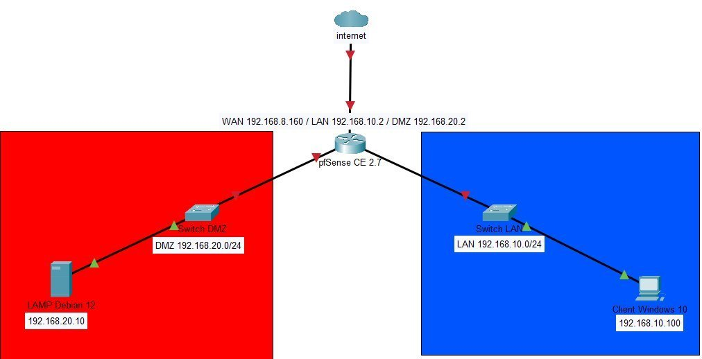
Internet → pfSense CE 2.7 → DMZ 192.168.20.0/24 (serveur LAMP) & LAN 192.168.10.0/24 (client Windows 10)
| VM / Équipement | Rôle | OS | IP |
|---|---|---|---|
| pfSense CE 2.7 | Pare-feu · Routeur · DNS · DHCP · Portail captif | FreeBSD | WAN .8.160 · LAN .10.2 · DMZ .20.2 |
| Serveur LAMP | Serveur web + base de données intranet | Debian 12 | 192.168.20.10 (DMZ fixe) |
| Client Windows 10 | Poste utilisateur — accès intranet | Windows 10 | 192.168.10.100 (DHCP LAN) |
Réalisation technique
Étape 1 – Installation de la pile LAMP
Tous les paquets sont installés pendant que la VM est en NAT (accès Internet). Une fois validés localement, on basculera la carte réseau vers la DMZ.
tom@lamp:~$ sudo apt install apache2 mariadb-server php libapache2-mod-php php-mysql -y tom@lamp:~$ sudo apt install phpmyadmin -y tom@lamp:~$ sudo systemctl enable apache2 mariadb ✓ apache2 2.4.67 · mariadb 10.11.14 · php 8.2.31 · phpMyAdmin 5.2.1
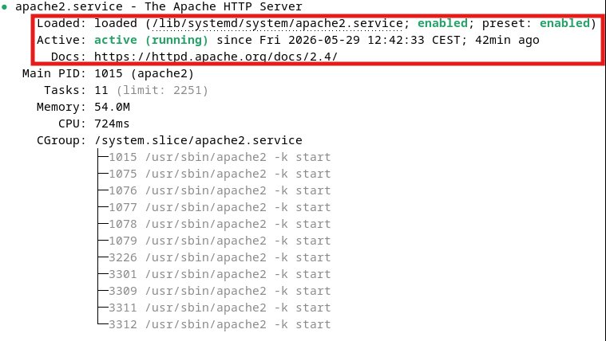
Fig. 1 – systemctl status apache2 — active (running) et enabled au démarrage
Apache est actif et configuré pour démarrer automatiquement au boot (enabled) — critère de disponibilité rempli.
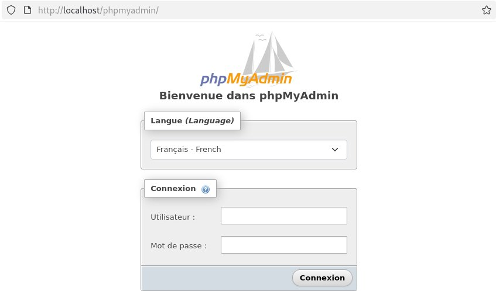
Fig. 2 – phpMyAdmin opérationnel pour l'administration de MariaDB
L'interface phpMyAdmin confirme que MariaDB et PHP fonctionnent ensemble : la base est administrable via le navigateur.
Étape 2 – Création du portail intranet PHP
Une page PHP dynamique affiche en temps réel l'IP serveur, l'OS, l'espace disque, la RAM et l'uptime. Le design adopte un thème terminal (fond noir, texte vert, animation Matrix, journal système animé). Trois versions successives ont été développées.
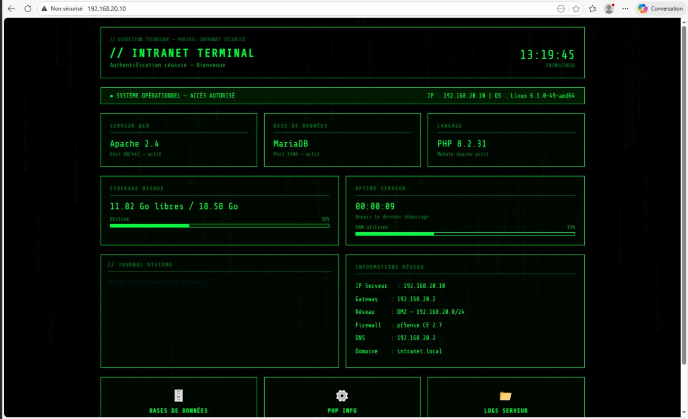
Fig. 3 – Version finale « INTRANET TERMINAL » — Apache 2.4, MariaDB, PHP 8.2.31, stats live
Le portail affiche dynamiquement l'état du serveur (services, disque, RAM, réseau) dans une interface soignée : c'est la vitrine de l'intranet pour les utilisateurs.
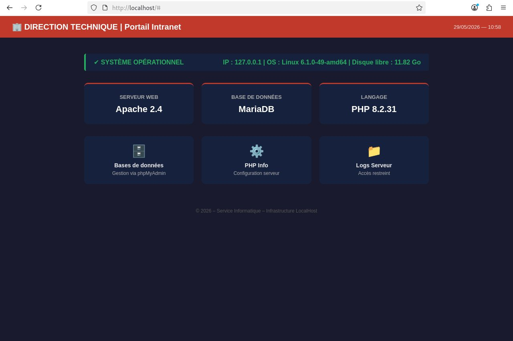
Fig. 4 – Version intermédiaire « Direction Technique » avec cartes de services
Étape de conception : cartes Apache / MariaDB / PHP, liens vers phpMyAdmin et les infos serveur.
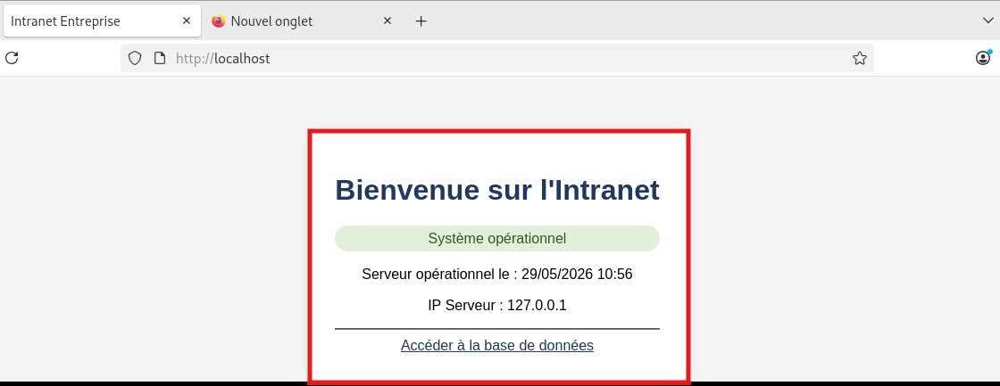
Fig. 5 – « Bienvenue sur l'Intranet » — système opérationnel, IP serveur affichée
Page d'accueil confirmant que l'intranet est opérationnel et joignable, avec accès direct à la base de données.
Étape 3 – Configuration de pfSense
pfSense centralise toute la sécurité réseau : routage, filtrage, DHCP, DNS et portail captif. Trois interfaces sont assignées.
| Règle pare-feu | Flux | Décision |
|---|---|---|
| LAN → DMZ | TCP 80 / 443 vers 192.168.20.10 | ALLOW |
| DMZ → WAN | Tout (mises à jour) | ALLOW |
| DMZ → LAN | Tout — règle critique | BLOCK |
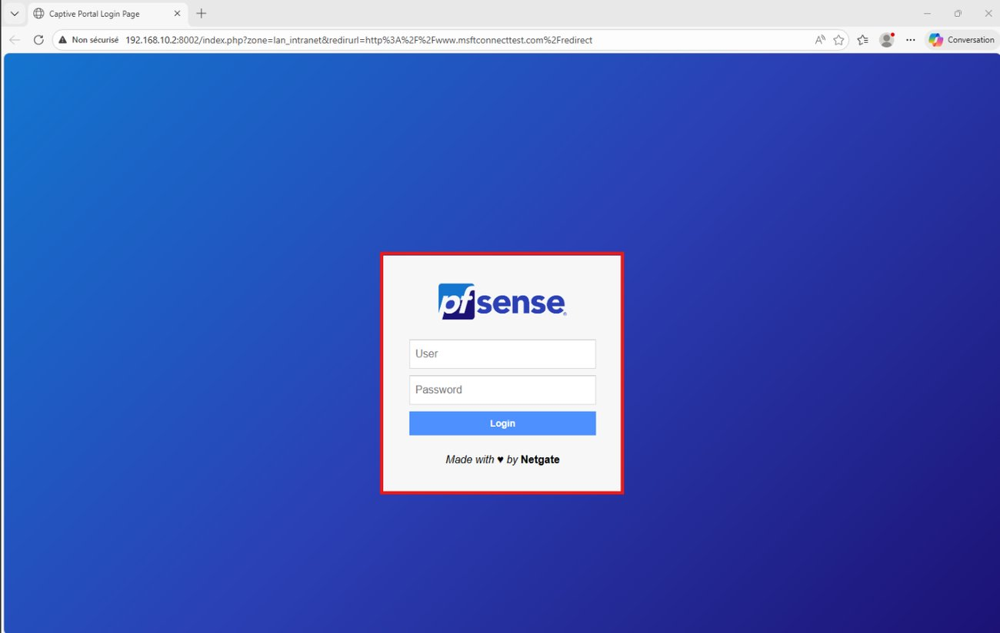
Fig. 6 – Interface d'administration web de pfSense CE 2.7
Toute la configuration (interfaces, règles, DHCP, DNS, portail captif) se fait depuis cette console web.
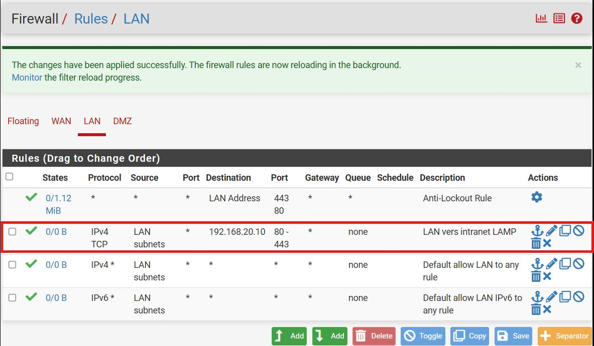
Fig. 7 – Firewall / Rules / LAN — règle « LAN vers intranet LAMP » (80/443 autorisés)
Le LAN peut atteindre le serveur LAMP en DMZ uniquement sur les ports web nécessaires : principe du moindre privilège.
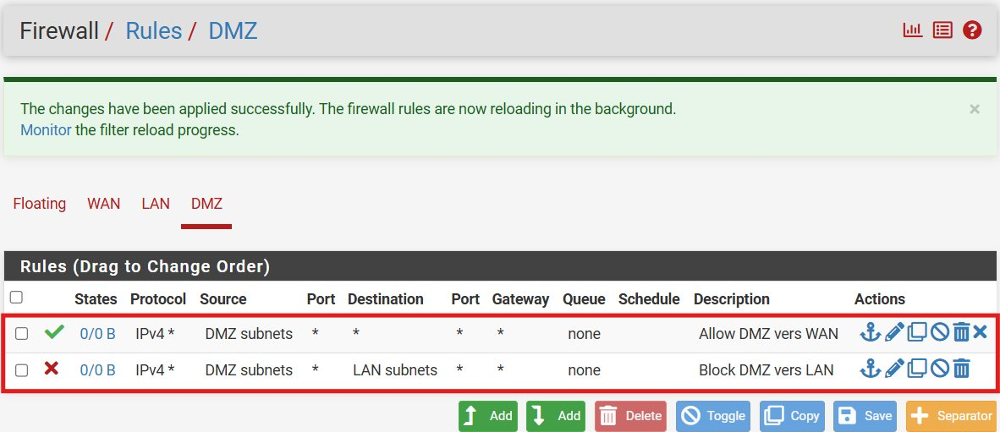
Fig. 8 – Firewall / Rules / DMZ — règle « Block DMZ vers LAN »
La DMZ est cloisonnée : aucun flux ne peut remonter vers le LAN. C'est la règle qui garantit l'isolation.
Étape 4 – Mise en réseau DMZ du serveur LAMP
Une fois la pile validée en local, on bascule la carte réseau VMware vers la DMZ et on fige l'IP sur Debian.
auto ens33
iface ens33 inet static
address 192.168.20.10
netmask 255.255.255.0
gateway 192.168.20.2
dns-nameservers 192.168.20.2
tom@lamp:~$ ping 192.168.20.2 -c 4 # 0% packet loss ✓
tom@lamp:~$ ping 8.8.8.8 -c 4 # 0% packet loss ✓
Étape 5 – Portail captif pfSense
Le portail captif intercepte toutes les connexions HTTP des clients LAN et les redirige vers une page de login. Seuls les utilisateurs authentifiés accèdent au réseau.
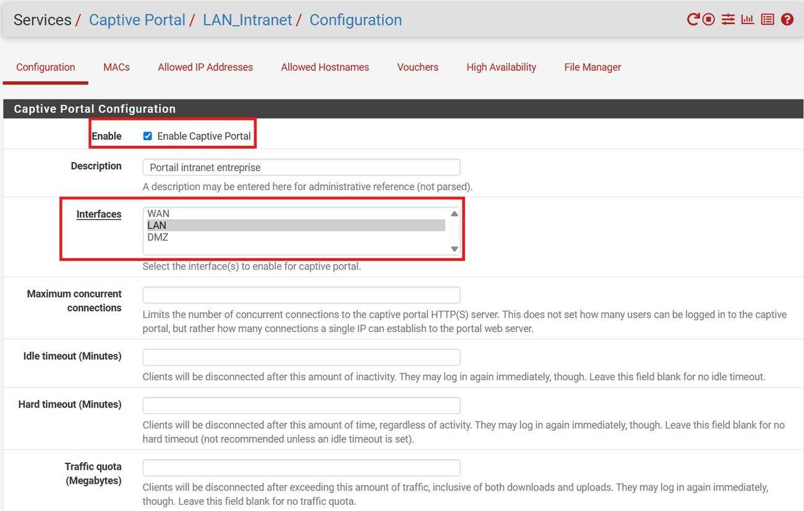
Fig. 9 – Services / Captive Portal / LAN_Intranet — portail activé sur l'interface LAN
Le portail est activé sur le LAN : toute navigation d'un client non authentifié est redirigée vers la page de login.
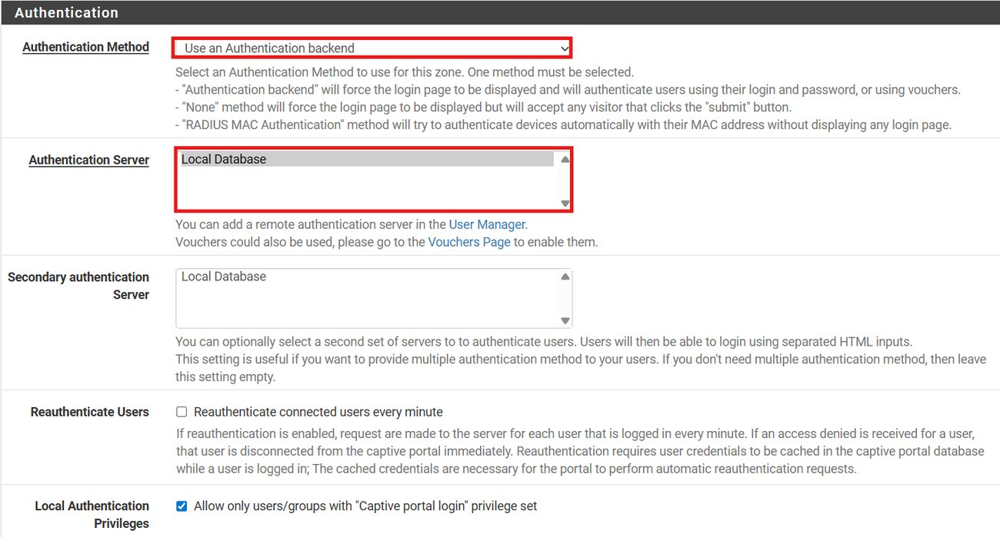
Fig. 10 – Authentification : « Use an Authentication backend » → Local Database
L'authentification s'appuie sur la base d'utilisateurs locale de pfSense, avec le privilège « Captive Portal Login » requis.
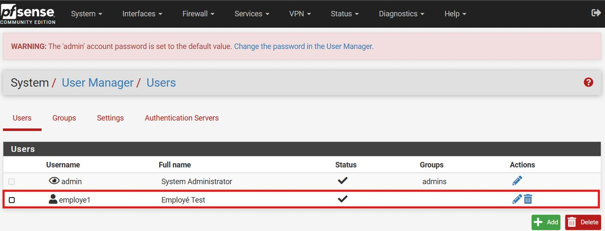
Fig. 11 – System / User Manager — utilisateur employe1 (Employé Test) créé
Le compte employe1 sert à valider la chaîne complète : login au portail → accès autorisé au réseau et à l'intranet.
Étape 6 – Résolution DNS locale (intranet.local)
Le DNS Resolver de pfSense résout intranet.local → 192.168.20.10. Tous les clients LAN en bénéficient automatiquement via le DHCP pfSense, sans toucher au fichier hosts.
C:\Users\tom> nslookup intranet.local Serveur : pfSense.home.arpa Address: 192.168.10.2 Nom : intranet.local Address: 192.168.20.10 ✓
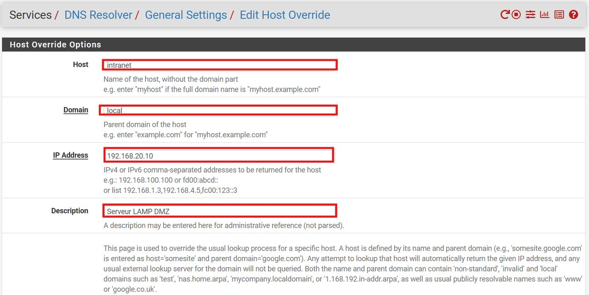
Fig. 12 – Services / DNS Resolver / Host Override — intranet.local → 192.168.20.10
L'entrée Host Override associe le nom intranet.local à l'IP du serveur LAMP : les utilisateurs tapent un nom lisible au lieu d'une IP.
Étape 7 – Sauvegarde automatique de la base
Un script bash utilise mysqldump pour exporter toutes les bases dans un fichier SQL horodaté. Une tâche cron planifie l'exécution chaque nuit à minuit.
# ~/backup_db.sh DATE=$(date +%Y-%m-%d_%Hh%M) mysqldump -u root -p --all-databases > ~/backups/backup_$DATE.sql tom@lamp:~$ crontab -l 0 0 * * * /bin/bash ~/backup_db.sh # tous les jours à minuit
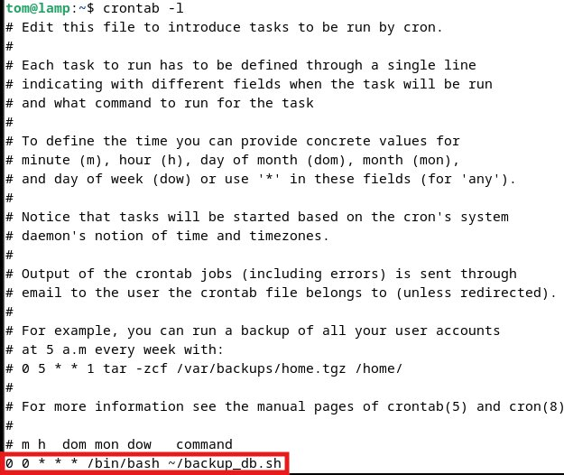
Fig. 13 – crontab -l — 0 0 * * * /bin/bash ~/backup_db.sh
La sauvegarde s'exécute automatiquement chaque nuit : en cas d'incident, les données de la veille sont récupérables — critère de disponibilité.
Tests & Preuves
| Test réalisé | Résultat attendu | Statut |
|---|---|---|
| Portail captif | Accès HTTP redirigé vers login (192.168.10.2:8002) | ✅ OK |
| Auth employe1 + accès intranet | Réseau autorisé, intranet.local joignable | ✅ OK |
| nslookup intranet.local | → 192.168.20.10 | ✅ OK |
| DHCP client Windows | 192.168.10.100, GW 192.168.10.2 | ✅ OK |
| Isolation DMZ (ping DMZ→LAN) | 100% packet loss (bloqué) | ✅ OK |
| Services au démarrage | apache2 & mariadb active + enabled | ✅ OK |
| phpMyAdmin via intranet.local | http://intranet.local/phpmyadmin | ✅ OK |
ping vers le client Windows retourne 100% packet loss — la règle Block DMZ→LAN est effective. Inversement, le client accède bien à l'intranet en 80/443. Le cloisonnement est validé dans les deux sens.Sécurité — Critères DICP
🔒 Confidentialité
Portail captif pfSense — authentification obligatoire avant tout accès au réseau et à l'intranet.
🛡 Intégrité
Règles pare-feu strictes — seuls les flux HTTP/HTTPS nécessaires sont autorisés entre LAN et DMZ.
⚡ Disponibilité
Apache + MariaDB en démarrage automatique + sauvegarde cron quotidienne à minuit.
🔴 Isolation
Serveur LAMP en DMZ cloisonnée — règle Block DMZ→LAN prouvée par test ping (100% loss).
Bilan et Compétences
Difficultés rencontrées et résolues
Axes d'amélioration
01 HTTPS / SSL
a2enmod ssl + certificat OpenSSL (Let's Encrypt en production).
02 Fail2Ban
Blocage d'IP après 5 tentatives SSH échouées, synchronisable avec pfSense.
03 VPN OpenVPN
Accès à l'intranet en télétravail, tout le trafic chiffré via pfSense.
04 Supervision
Zabbix / Grafana : disponibilité, CPU/RAM, alertes automatiques.
05 LDAP / AD
Comptes centralisés — désactiver un compte coupe l'accès partout.
06 HA — CARP
Deux pfSense actif/passif pour éliminer le point de défaillance unique.
Compétences BTS SIO SISR — Bloc 1
| Compétence | Mise en œuvre dans ce projet |
|---|---|
| B1.1 | Patrimoine — installation, configuration et documentation LAMP + pfSense (LAN/DMZ) |
| B1.2 | Incidents — portail captif Access Denied, conflit DHCP/DNS, règles pare-feu |
| B1.3 | Présence en ligne — portail intranet PHP dynamique, thème terminal, stats live |
| B1.4 | Mode projet — enchaînement pfSense → LAMP → portail → captif → DNS → sauvegarde → tests |
| B1.5 | Services — intranet accessible depuis le LAN après authentification portail captif |
| B1.6 | Dév. professionnel — documentation avec captures réelles, fiche et rapport technique |
| Cyber | DICP — Confidentialité · Intégrité · Disponibilité · Isolation, tous prouvés |